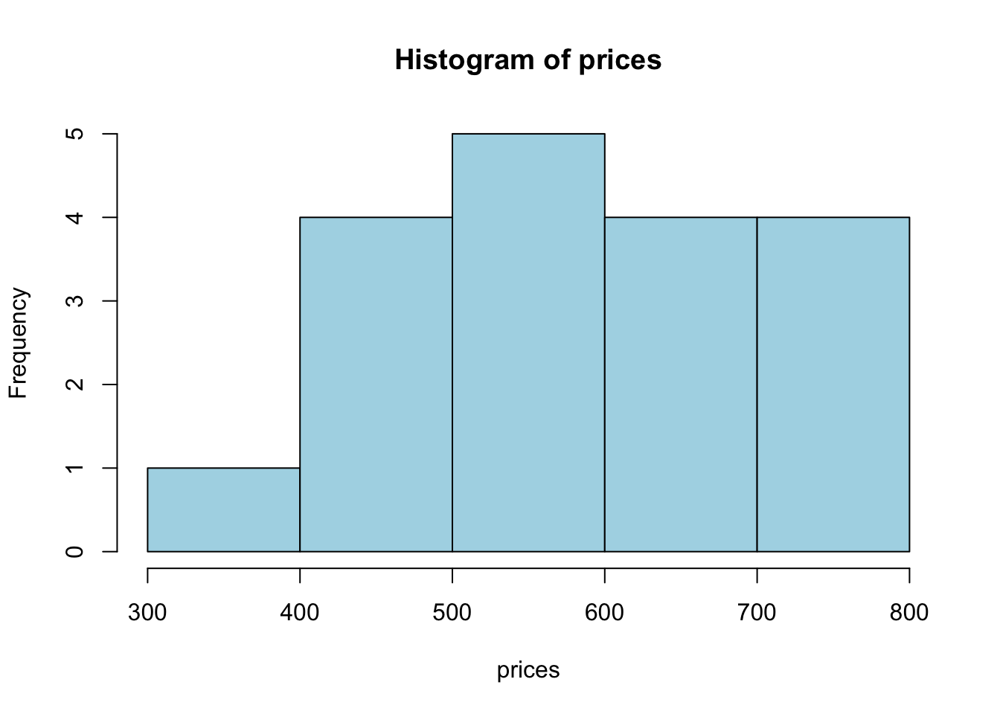
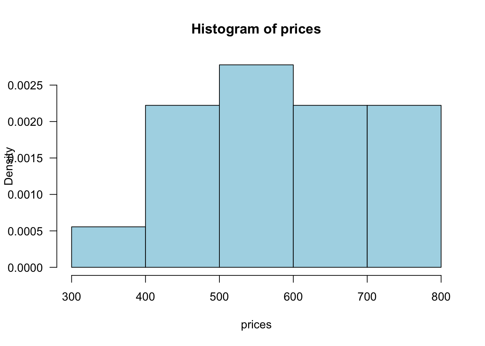
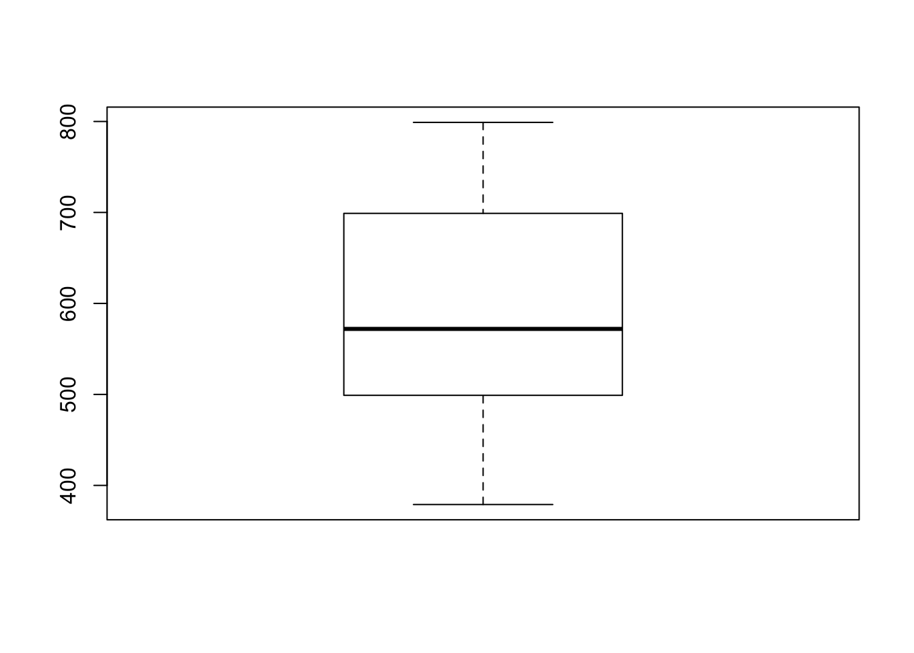
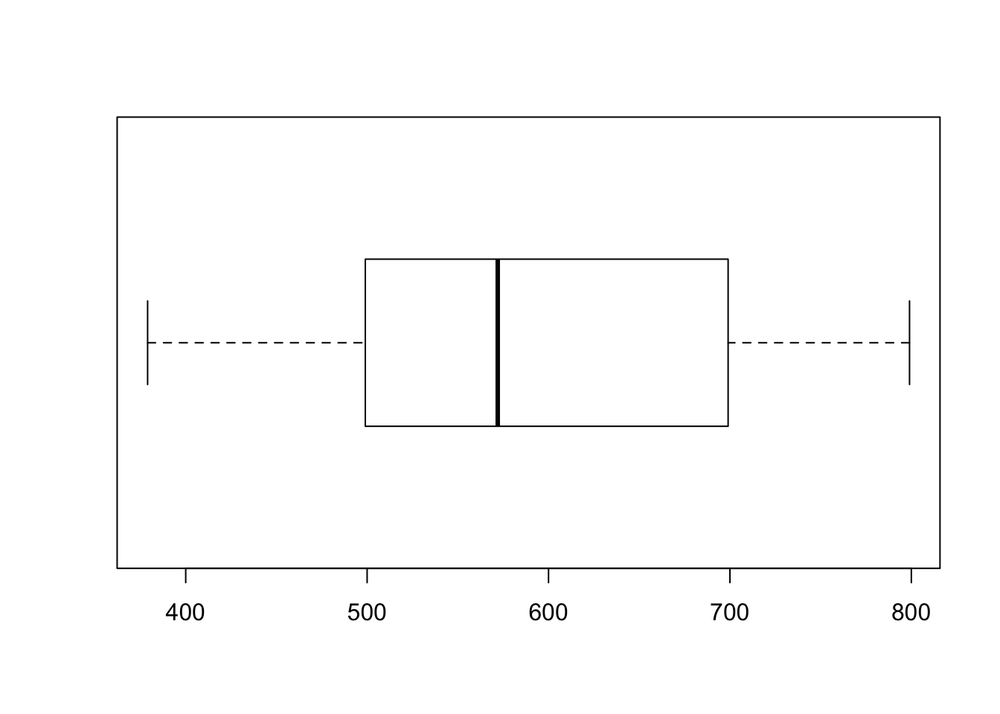

Ch. 1 Descriptive Statistics
1.2 Stem and leaf plot
prices <- c(379, 425, 450, 450, 499, 529, 535, 535, 545, 599, 665,
675, 699, 699, 725, 725, 745, 799)
stem(prices)##
## The decimal point is 2 digit(s) to the right of the |
##
## 3 | 8
## 4 | 355
## 5 | 03445
## 6 | 078
## 7 | 00335
## 8 | 00.3 1.2 Frequency histogram
prices <- c(379, 425, 450, 450, 499, 529, 535, 535, 545, 599, 665,
675, 699, 699, 725, 725, 745, 799)
hist(prices)

0.4 1.2 Density histogram
prices <- c(379, 425, 450, 450, 499, 529, 535, 535, 545, 599, 665,
675, 699, 699, 725, 725, 745, 799)
hist(prices, freq = FALSE,
breaks = c(300, 400, 500, 600, 700, 800),
col = "lightblue", las = 1)
0.5 1.3 Measures of location
prices <- c(379, 425, 450, 450, 499, 529, 535, 535, 545, 599, 665,
675, 699, 699, 725, 725, 745, 799)
mean(prices)## [1] 593.2222## [1] 572## 0% 25% 50% 75% 100%
## 379.0 506.5 572.0 699.0 799.0## [1] 593.750.6 1.4 Measures of variability
Sample variance
prices <- c(379, 425, 450, 450, 499, 529, 535, 535, 545, 599, 665,
675, 699, 699, 725, 725, 745, 799)
var(prices)## [1] 15981.48Sample standard deviation
## [1] 126.4179## [1] 126.4179Five number summary
(min, lower-hinge, median, upper-hinge, max)
## [1] 379 499 572 699 7990.7 1.4 Boxplots
prices <- c(379, 425, 450, 450, 499, 529, 535, 535, 545,
599, 665, 675, 699, 699, 725, 725, 745, 799)
boxplot(prices)

PTSD <- c(10, 20, 25, 28, 31, 35, 37, 38, 38, 39, 39, 42, 46)
Healthy <- c(23, 39, 40, 41, 43, 47, 51, 58, 63, 66, 67, 69, 72)
df <- data.frame(Healthy, PTSD)
boxplot(df, horizontal = TRUE)